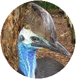

Foto de perfil:
Meu nome e Otávio Augusto faço parte do Projeto Educere estou na área de programação é estudo no Colégio Civico Militar Marechal Rondon. Busco expandir meu conhecimento aprender e melhorar sempre que posso, gosto de desenhar e jogar no tempo livre.
Só pessoalmente ou pelo whatsapp já que nao possuo redes sociais